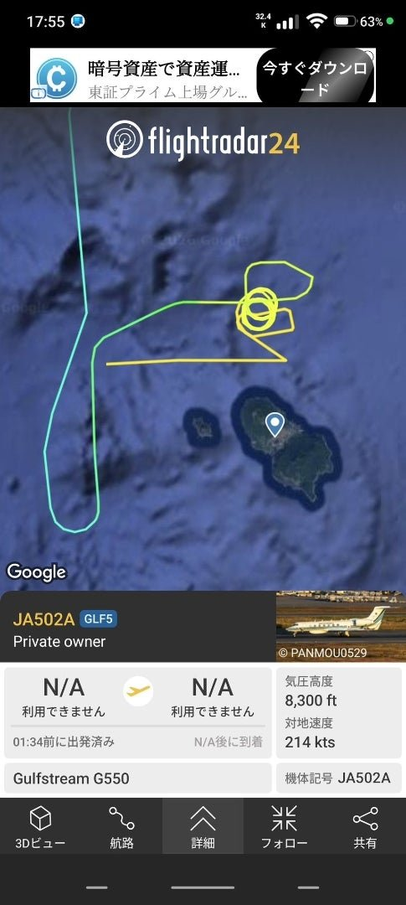
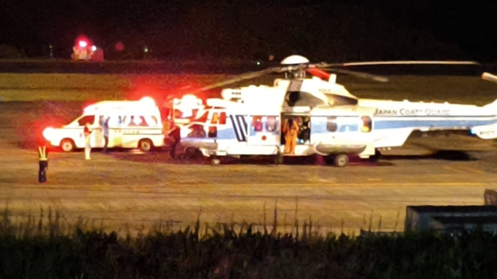

海上保安庁がボートダイビング行方不明事故者の居住区を発表
東京都の八丈島の沖合で10月3日、ダイビング客など8人が行方不明になった水難事故で、下田海上保安部は10月4日、救助された8人の年齢と性別、居住地を発表しました。

ダイビングインストラクター1人は、八丈島在住の41歳男性。ダイビング客7人は、神奈川県横浜市在住の63歳女性、川崎市在住の62歳女性、46歳男性、46歳女性、東京都品川区在住の46歳男性、茨城県つくば市在住の45歳女性、東京都中野区在住の40歳男性です。
8人には軽度の脱水症状があり、病院に運ばれましたが、入院はしていません。川崎市在住の46歳女性だけは、波酔いの症状が強く、点滴を受けたということです。

この事故は10月3日午後1時52分頃、八丈島の沖合で、ダイビングボートの船長から「ダイビングをしていた8人が午前11時半頃にダイビングを開始し、午後0時半頃に浮上してくる予定であったが、全員浮上してこない」という内容の通報がありました。
現場では海上保安庁が飛行機などによる捜索を行い、午後4時40分頃に海上で8人全員を発見しました。8人は午後5時半頃までにヘリコプターで救助されていて、全員意識はありました。
現場周辺の天候は曇りで、北東の風14メートル、波のうねりは3メートルだったということです。
※ この記事はアメブロからの移行記事です（原文はこちら）